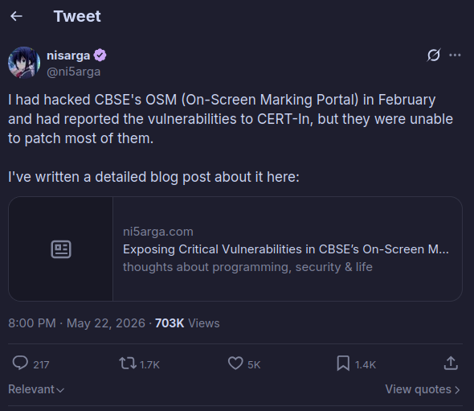
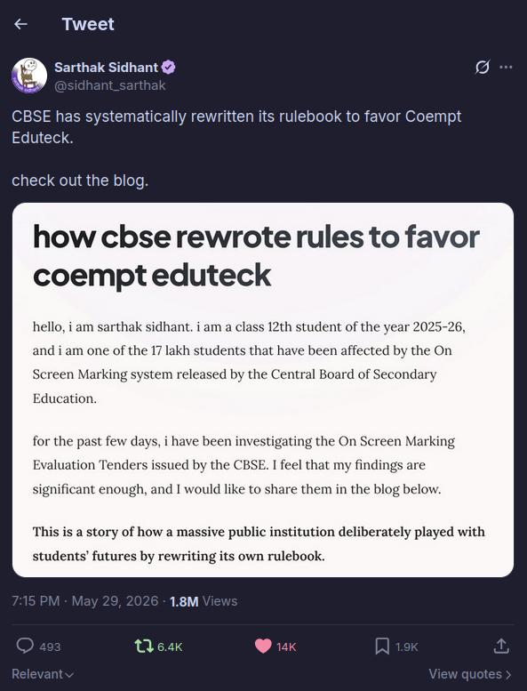
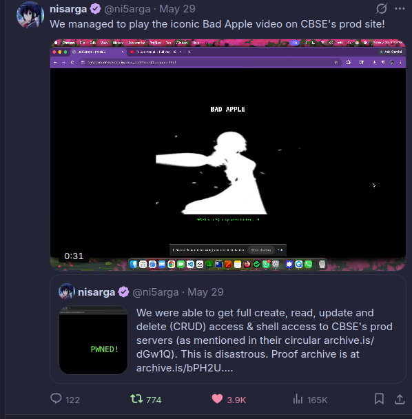
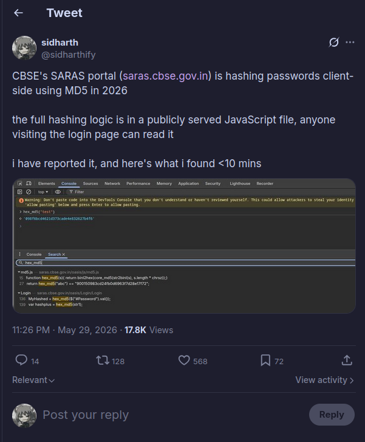
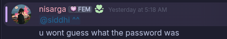
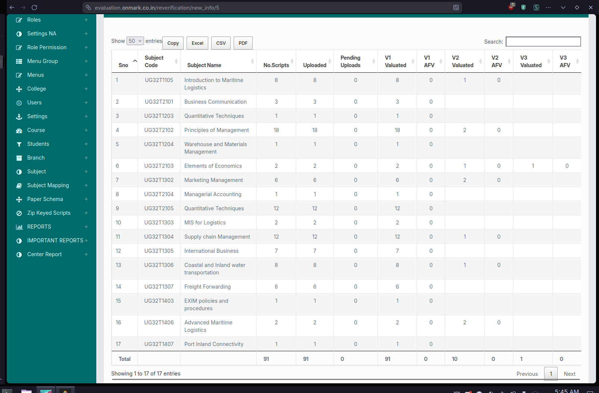
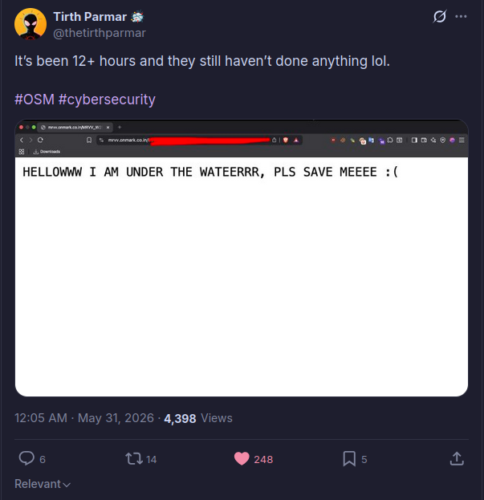
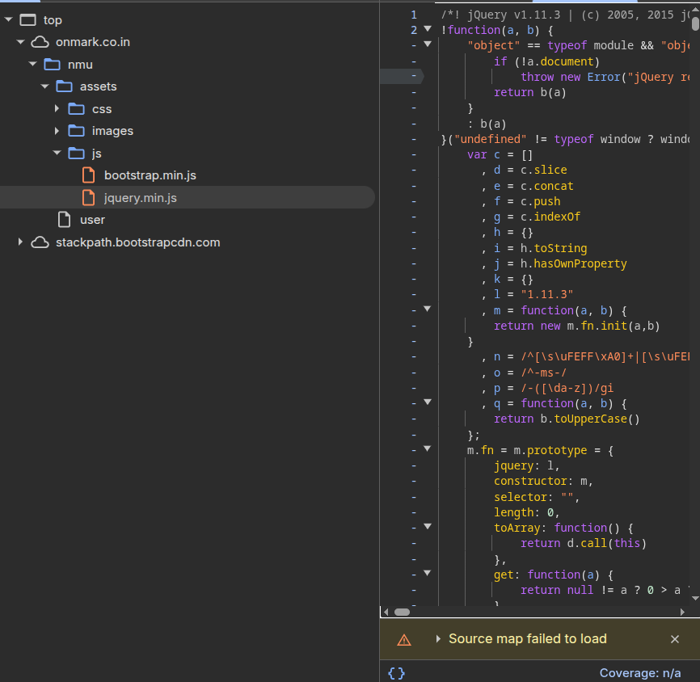

Exposing the Lies Behind CBSE's OnMark Portals
This is going to be extremely different from the stuff I usually post (I know, I said that in the last post too, but for real this time). I will save you the suspense and cut straight to the core of what we found: Almost all OnMark websites built by EduTek are fundamentally insecure, and CBSE is lying to you about the safety of student data.
If anyone's new here, please do take a look at my other posts, maybe they'll be interesting, but please read this one carefully. It takes a bit of time to break down exactly how deep this rot goes, so have some patience while reading.
CBSE? The hell's that?
For my international readers, CBSE (Central Board of Secondary Education) is India's national education board. They oversee the curriculum and board examinations for millions of students across the country. To handle the massive task of grading these exams, CBSE uses OSM (On-Screen Marking), a digital evaluation portal where examiners log in to grade scanned student answer sheets online. Because these platforms manage the academic futures of countless students, their security is expected to be completely airtight. But the reality of government contracting is often a race to the bottom. Instead of building robust, battle-tested software, these massive national projects are frequently outsourced to the lowest-bidding vendors, in this case, EduTek. This creates a dangerous disconnect: the developers building the portals have little incentive or accountability to implement actual security, leading to a culture of negligence that puts the data of an entire generation at risk.
Nisarga's Discovery
It all started when Nisarga, as you all may already know, a fellow security researcher, uncovered the first cracks in the system. While analyzing the infrastructure of the CBSE and OnMark portals, platforms responsible for the sensitive data and exam evaluations of millions of students, he noticed some glaring inconsistencies. He documented these foundational vulnerabilities in his detailed blog post.

Sarthak's Discovery
Shortly after, Sarthak Sidhant, a 17 year old CBSE student took the initiative to expose these initial findings to the public, shedding light on what seemed to be a series of severe oversights by the government contractors responsible for building and maintaining these portals. In his own write-up, he proved how deeply flawed their infrastructure was, demonstrating that basic security practices were completely ignored.

But as is often the case with these massive government systems, the rabbit hole went much deeper than we initially thought. What began as a few isolated bugs quickly spiraled into a realization that this wasn't just poor coding, it was a systemic infrastructure failure.
Full Access & Bad Apple
Shortly after the initial findings, Nisarga teamed up with another researcher, Tirth. Together, they managed to breach the system once again, but this time they escalated their privileges to gain full read and write (RW) access to the entire site. To prove they had complete control over the infrastructure, they uploaded a series of files, most notably playing the legendary "Bad Apple" animation directly on the official OnMark domain, along with a lot of other hilarious additions.

Why Bad Apple? It's a classic hacker trope, but seeing it play flawlessly on a national government examination portal is nothing short of surreal. It visually demonstrated that they didn't just have passive read access; they had complete, unimpeded read and write privileges. They could modify the DOM, inject arbitrary scripts, and completely hijack the user interface. If they could embed a YouTube video, a malicious actor could have just as easily injected a silent keylogger, a credential harvester, or ransomware that would instantly compromise the machine of every examiner who logged in to grade papers.
If you want to verify this yourself, the team preserved snapshots of the compromised domains. You can view them here: Archive 1, Archive 2, Archive 3, and Archive 4.
Getting Involved
My involvement in this started somewhat randomly after all of this went down. I happened to be in a mutual Discord server with Nisarga, though I didn't actually know him at the time. I managed to guess his username, and after I reached out.
As I started poking around the infrastructure myself, things got even more concerning. One
of the first major red flags I discovered was how they were handling passwords on portals like
saras.cbse.gov.in. For context, SARAS (School Affiliation Re-Engineered
Automation System) is the massive central database that contains the affiliation details, regulatory
compliance data, and administrative records for every single CBSE-affiliated school in the country. And
yet, for a system holding the keys to thousands of educational institutions, they were storing
administrator passwords as raw MD5 hashes.
For those who might not know, MD5 is a hashing algorithm designed back in 1991 that was declared cryptographically broken over a decade ago. It is heavily susceptible to collision attacks and can be brute-forced in mere seconds using off-the-shelf hardware and tools like Hashcat. Storing passwords in MD5 in 2026 is not just an oversight, it is a glaring, neon red flag that the developers lack even a foundational understanding of modern security practices. It effectively means that the password of every school administrator in the SARAS database was essentially stored in plain text for anyone with a basic GPU.

Fortunately, after discovering this, I immediately emailed them to responsibly disclose the vulnerability. To their credit, they did actually patch this specific issue, and the MD5 hashes are no longer exposed on SARAS. However, it is important to note that SARAS was built by a completely different vendor, not EduTek or OnMark. This other vendor was relatively more responsive and competent (though storing passwords in MD5 in the first place is still objectively terrible). But this small victory was short-lived. Once we turned our attention back to the portals actually built by EduTek, it was glaringly obvious how completely unsecure everything else was. Their underlying infrastructure was so fragile and exposed that it didn't require advanced exploits or sophisticated attacks; the doors were practically left wide open. But you have yet to see the most idiotic thing ever.
The "123456" Incident
As if the completely exposed infrastructure and outdated MD5 hashes weren't bad enough, things took a turn for the truly absurd. Shortly after Nisarga made this tweet teasing a major finding, he messaged me in DMs. His exact words were something along the lines of, "You won't guess what the password was."

He sent me the credentials, and I honestly couldn't believe my eyes. I had to see it for myself. I
navigated to the administrative login portal, entered the username he provided, and then typed in the
password he had sent me: 123456.
To my absolute disbelief, it worked perfectly. I was immediately logged in.

This wasn't just a basic, low-level user account either; this was a full administrative backdoor. With a password that literally ranks as the most common and insecure password globally, I suddenly found myself with the power to do EVERYTHING. We are talking about complete, unrestricted access to the inner workings of a government-contracted portal. I could have viewed sensitive student data, accessed confidential records, and tampered with national exam evaluations without triggering a single alarm.
It is genuinely difficult to overstate how negligent this level of security is. When you build a system
this critical, you expect layers of defense: multi-factor authentication, IP whitelisting, stringent
password requirements, and rate limiting. Instead, the literal keys to the kingdom were protected by
123456, the most heavily mocked password in human history. With superadmin
access, the potential for damage is limitless. An attacker could unilaterally alter the exam scores of a
million students, completely destroying the integrity of the national education system. They could leak
the Personally Identifiable Information (PII) of examiners, students, and administrative staff, leading
to mass identity theft. A system built by government contractors to handle the futures of millions was
left wide open, proving beyond a shadow of a doubt that they had skipped even the most basic security
protocols.
RCEs & Ancient Frameworks
But the nightmare didn't end there. As we kept digging, we realized this wasn't just an isolated mistake on a single portal. This catastrophic lack of security was a pattern baked into almost every single OnMark website. Across all their domains, we saw the exact same insecure practices and the exact same neglected infrastructure, all while CBSE continued to publicly claim their systems were perfectly fine and secure.
To demonstrate just how deep this systemic rot went, Tirth and Nisarga managed to get a webshell running
on another portal: https://mrvv.onmark.co.in/. Nisarga sent it to me to test, and it was
almost comical how exposed it was. You could literally achieve Remote Code Execution (RCE) and run any
Windows command on their servers just by appending it to the URL.
It looked exactly like this:
https://mrvv.onmark.co.in/MRVV_W25_Onmark_WebAPI/Evalbank/QP_MRV00001.aspx?cmd=[windowscommands].
Tirth's tweet perfectly encapsulates the absolute absurdity of being able to control a government server through a simple URL parameter.

With this webshell access, Nisarga dug even deeper into the server. He managed to locate the database
connection strings and found that they were using an incredibly weak SQL password:
Admin@1977 for the sa (system administrator) account. By executing basic
sqlcmd queries directly through the RCE, he listed out all the databases on the server. The
output revealed production databases for multiple massive organizations all sitting on the exact same
infrastructure, including cbse_ctet_s26_onmarkwin_prod, RGUHS_ONMARK, and
MRV_ONMARK.
This discovery highlighted a terrifying multi-tenancy disaster. EduTek wasn't just hosting one insecure portal; they were hosting multiple, distinct national organizations on the exact same server instance. This means that a vulnerability in one client's portal immediately compromises all other clients. If a smaller, less scrutinized university portal gets hacked, the entire national CBSE database goes down with it. It is a massive house of cards waiting for a breeze.
When querying the tables, the results were devastating. We could see the entire monolithic structure of
their databases, including tables like CW_WORKER_MASTER and CW_PASSWORD_RESET,
indicating that sensitive data was likely intermingled and poorly partitioned. A dump of the admin users
table laid everything bare: the credentials for superadmin, scanadmin, and
numerous evaladmin accounts. It also exposed their internal phone numbers and emails, many
of which belonged to @coempt.in, the vendor responsible for building these highly flawed
portals.
Frontend Vulnerabilities
While they were exploiting the backend, I decided to take a closer look at the frontend. I started
analyzing the JavaScript bundles powering these vulnerable sites, specifically looking at domains like
https://evalsctevt.onmark.co.in/ and https://onmark.co.in/nmu/user. What I
found was staggering. These "secure" portals were running on ancient, obsolete code. Hilariously,
onmark.co.in/nmu/user was actively loading Bootstrap 4 alongside a version of jQuery from
2013 (v1.10.2). This Frankenstein's monster of a frontend exposed them to a slew of
known vulnerabilities, including CVE-2024-6531, CVE-2019-8331, and
CVE-2018-14041.

-
CVE-2020-11022 & CVE-2020-11023 (Cross-Site Scripting): The regex used in
jQuery.htmlPrefilterto preprocess HTML before DOM insertion can be bypassed. Passing HTML from untrusted sources to methods like.html()or.append()executes untrusted code even after prior sanitization. This allows attackers to easily inject malicious scripts into the DOM via crafted self-closing tags. -
CVE-2019-11358 (Prototype Pollution): The
jQuery.extend()function is heavily vulnerable. If an attacker passes a source object with an enumerable__proto__property into$.extend(true, {}, src), they can pollute the globalObject.prototype. This compromises the entire runtime, injecting properties that affect all objects, which can escalate to remote code execution (RCE) or complete application hijacking. -
CVE-2015-9251 (XSS via AJAX): Cross-domain AJAX requests that do not specify a
dataTypeare vulnerable. If an attacker controls the endpoint and responds withtext/javascript, jQuery will automatically execute the response payload directly within the page context. -
CVE-2012-6708 (Selector Injection XSS): The core
jQuery()function fails to reliably distinguish between CSS selectors and raw HTML. Passing attacker-controlled input (like data fromlocation.hash) directly into$()executes arbitrary scripts.
Let that sink in. A critical government infrastructure platform, responsible for the integrity of nationwide exams, is running on a web framework that hasn't been secure for over a decade. By failing to update their dependencies, EduTek left the door wide open for automated exploit scanners to rip these portals apart.
While XSS and Prototype Pollution might sound abstract, in the real world, this means an attacker could
easily send a crafted, malicious link to a CBSE examiner. Once clicked, the attacker's script silently
executes in the examiner's browser, immediately stealing their session token. Without warning, the
attacker gains full access to grade papers on the examiner's behalf. Furthermore, the lack of
dataType validation in their AJAX requests means the application blindly trusts and
executes whatever the server hands it. You don't need to be a sophisticated hacker; these exploits are
publicly available, easily executable, and completely devastating.
An Ongoing Disaster
The most terrifying part of all this isn't just the individual vulnerabilities, it's the undeniable pattern. This isn't an isolated mistake, this exact same insecure boilerplate is deployed across every single OSM (OnMark System Management) website. From raw MD5 hashes to default `123456` admin passwords, from URL-based RCEs to decade-old jQuery libraries, they literally copied and pasted the exact same flaws into every client portal they built. It is a systemic failure of unprecedented proportions, a fundamental rot extending across their entire digital footprint.
And yet, the silence is deafening. What happens now? The fact that CBSE is either ignoring this or actively lying about their security posture is a massive breach of public trust. When vulnerabilities of this magnitude are disclosed, the standard response is an immediate system audit, forced password resets, and a transparent public acknowledgment. Instead, we see nothing but denial. The data of millions of students remains at acute risk. We desperately need a fundamental shift in how government bodies procure, audit, and maintain software. Until there are strict, rigorously enforced cybersecurity mandates, and severe penalties for vendors who deliver insecure garbage, this systemic rot will continue to thrive in the dark.